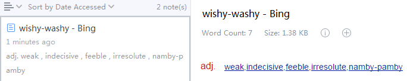

Empty Note
Two ways to create an empty note:
- Right-click one of your folders.
Click "New Note" on the top bar.
- Click the
 button, and drag the note under any folder you want.
button, and drag the note under any folder you want.
Tips on editing notes:
- You can add a Word or PDF file to your note.

- One-click clipping from Internet Explorer using WizNote's Web Clipper.
This clipper is a button in th etoolbar of Microsoft Internet Explorer, Google Chrome and 360 browser. You can add a web page to a new note and edit.
- Download the clipper from http://www.wiz.cn/download.html, and add it to the
toolbar.

- Open a web page and save the content you want to copy.

- Edit what you've clipped.

- Add an internal link.
An internal link connects multiple notes. You can add as many as internal links as you want to make other notes searchable in just one note.
- Right-click Note 1 on the center bar, and click "advanced" to "Copy Note
Internal Link".

- Paste it onto Note 2.
- Click "Save and Read" at the top-right corner.
- Now Note 1 is linked to Note 2.
- Right-click Note 1 on the center bar, and click "advanced" to "Copy Note
Internal Link".